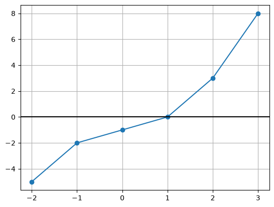
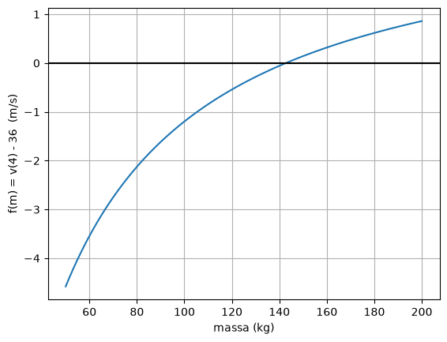
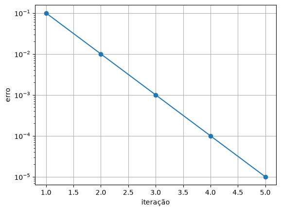
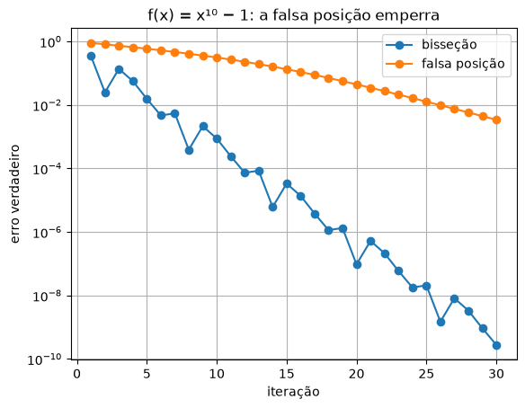

4. Bisseção e falsa posição¶
Muita pergunta de engenharia, de finanças ou de saúde tem a mesma forma, embora não pareça: qual valor de \(x\) faz esta conta dar tal resultado? Que massa faz um paraquedista chegar a 36 m/s em 4 segundos? Que taxa de juros faz um investimento se pagar? Por quanto tempo um remédio fica acima da dose eficaz? Em todas elas, passando tudo para um lado só, a pergunta vira \(f(x) = 0\). Achar esse \(x\) é achar uma raiz.
Para \(x^2 - 5x + 6 = 0\) existe fórmula. Para \(\sqrt{gm/c}\,\tanh(\sqrt{gc/m}\,t) = 36\) não existe. Este capítulo apresenta os dois métodos mais seguros para esses casos: eles começam com um intervalo onde a raiz com certeza está e o apertam até ela ficar presa.
Achar uma raiz é achar onde a curva cruza o zero¶
🌍 Contexto: o paraquedista, de trás para frente
No capítulo 0, dada a massa, calculamos a velocidade. Agora o problema é o contrário: uma equipe de salto sabe que o paraquedista chegou a 36 m/s depois de 4 s e quer estimar a massa dele (com o equipamento). A fórmula não se deixa "isolar" para \(m\). Mas \(f(m) = v(m) - 36\) vale zero exatamente na massa procurada.
O primeiro passo é sempre olhar o gráfico de \(f\): onde a curva cruza o zero, está a raiz. Para enxergar o zero, uma linha horizontal ajuda.
🧰 Comando novo: plt.axhline
plt.axhline(y) desenha uma linha horizontal que atravessa a figura inteira,
na altura y. Com plt.axhline(0, color="black"), o eixo do zero fica
marcado, e dá para ver onde a curva o cruza:
import matplotlib.pyplot as plt
x = [-2, -1, 0, 1, 2, 3]
y = [-5, -2, -1, 0, 3, 8]
plt.figure()
plt.plot(x, y, "o-")
plt.axhline(0, color="black") # linha horizontal na altura y = 0
plt.grid()
plt.show()

# Que massa faz um paraquedista chegar a 36 m/s depois de 4 s de queda?
# A pergunta vira uma equacao f(m) = 0, e o grafico mostra onde procurar.
import numpy as np
import matplotlib.pyplot as plt
g = 9.81
c = 0.25
t = 4
def f(m):
v = np.sqrt(g * m / c) * np.tanh(np.sqrt(g * c / m) * t)
return v - 36
massas = np.linspace(50, 200, 100)
plt.figure()
plt.plot(massas, f(massas))
plt.axhline(0, color="black")
plt.xlabel("massa (kg)")
plt.ylabel("f(m) = v(4) - 36 (m/s)")
plt.grid()
plt.show()
print(f"f(100) = {f(100):.4f}")
print(f"f(200) = {f(200):.4f}")

\(f(100)\) é negativo e \(f(200)\) é positivo: em algum ponto entre os dois, \(f\) passou pelo zero. Isso é tudo de que os métodos deste capítulo precisam.
Bisseção¶
🧑🏫 No quadro — o método da bisseção
1. Se \(f\) é contínua (sem saltos) e \(f(a)\) e \(f(b)\) têm sinais contrários, existe pelo menos uma raiz entre \(a\) e \(b\) (teorema de Bolzano). O teste de sinal contrário é \(f(a)\,f(b) < 0\).
2. Calcule o ponto médio, \(x_m = \dfrac{a + b}{2}\).
3. Olhe o sinal de \(f(x_m)\). Se \(f(a)\,f(x_m) < 0\), a raiz está em \([a, x_m]\): faça \(b = x_m\). Senão, está em \([x_m, b]\): faça \(a = x_m\).
4. O intervalo caiu pela metade, e a raiz continua presa nele. Repita até o erro relativo aproximado \(\varepsilon_a\) (do capítulo 1) ficar abaixo da tolerância.
5. Depois de \(n\) cortes, o intervalo mede \(\dfrac{b - a}{2^n}\), e esse é o maior erro possível.
# Bissecao: corta o intervalo ao meio e fica com a metade onde f troca de sinal.
import numpy as np
g = 9.81
c = 0.25
t = 4
def f(m):
v = np.sqrt(g * m / c) * np.tanh(np.sqrt(g * c / m) * t)
return v - 36
a = 100.0
b = 200.0
tol = 0.05 # criterio de parada: erro relativo aproximado em %
xm = a
print(" it a b xm f(xm) eps_a (%)")
for it in range(1, 51):
anterior = xm
xm = (a + b) / 2
eps_a = abs((xm - anterior) / xm) * 100
print(f"{it:3d} {a:9.4f} {b:9.4f} {xm:9.4f} {f(xm):9.5f} {eps_a:9.4f}")
if f(a) * f(xm) < 0:
b = xm # a troca de sinal esta na metade da esquerda
else:
a = xm # ... ou na da direita
if eps_a < tol:
break
print(f"massa: {xm:.4f} kg")
it a b xm f(xm) eps_a (%)
1 100.0000 200.0000 150.0000 0.14204 33.3333
2 100.0000 150.0000 125.0000 -0.40860 20.0000
3 125.0000 150.0000 137.5000 -0.11080 9.0909
4 137.5000 150.0000 143.7500 0.02058 4.3478
5 137.5000 143.7500 140.6250 -0.04380 2.2222
6 140.6250 143.7500 142.1875 -0.01129 1.0989
7 142.1875 143.7500 142.9688 0.00472 0.5464
8 142.1875 142.9688 142.5781 -0.00327 0.2740
9 142.5781 142.9688 142.7734 0.00073 0.1368
10 142.5781 142.7734 142.6758 -0.00127 0.0684
11 142.6758 142.7734 142.7246 -0.00027 0.0342
massa: 142.7246 kg
Onze iterações para uma tolerância de 0,05 %. Cada linha é uma conta de ponto médio e um teste de sinal: é exatamente a tabela à mão (✏️) que cai na parte em papel da prova, com as colunas \(a\), \(b\), \(x_m\), \(f(x_m)\) e \(\varepsilon_a\).
💡 Pense assim: adivinhar um número de 1 a 100
"É maior ou menor que 50?" — "Maior." — "Que 75?" — "Menor." A cada pergunta, metade das possibilidades some. Em 7 perguntas, qualquer número de 1 a 100 é encontrado. A bisseção joga esse jogo com o sinal de \(f\).
Quantas iterações são necessárias¶
A bisseção tem uma vantagem que nenhum outro método do curso tem: dá para saber antes de começar quantas iterações serão necessárias. Para o erro ficar abaixo de \(\Delta\), basta que \(\frac{b-a}{2^n} < \Delta\), ou seja,
No paraquedista, com \(b - a = 100\) kg e \(\Delta = 0{,}01\) kg: \(\ln(10\,000)/\ln 2 \approx 13{,}3\), e 14 iterações garantem a massa com erro menor que 10 gramas, qualquer que seja a função. O preço dessa garantia é a lentidão: a bisseção não olha os valores de \(f\), só os sinais.
Falsa posição¶
🧑🏫 No quadro — a falsa posição
1. Se \(|f(b)|\) é muito menor que \(|f(a)|\), a raiz provavelmente está mais perto de \(b\). O ponto médio ignora essa informação.
2. Trace a reta que liga \((a, f(a))\) a \((b, f(b))\) e veja onde ela cruza o zero. Por semelhança de triângulos:
3. O resto é igual à bisseção: teste o sinal de \(f(x_r)\) e fique com o lado onde a troca de sinal continua.
# Falsa posicao: em vez do meio, o ponto onde a reta que liga
# (a, f(a)) a (b, f(b)) cruza o zero.
import numpy as np
g = 9.81
c = 0.25
t = 4
def f(m):
v = np.sqrt(g * m / c) * np.tanh(np.sqrt(g * c / m) * t)
return v - 36
a = 100.0
b = 200.0
tol = 0.05
xr = a
print(" it a b xr f(xr) eps_a (%)")
for it in range(1, 51):
anterior = xr
xr = b - f(b) * (a - b) / (f(a) - f(b))
eps_a = abs((xr - anterior) / xr) * 100
print(f"{it:3d} {a:9.4f} {b:9.4f} {xr:9.4f} {f(xr):9.5f} {eps_a:9.4f}")
if f(a) * f(xr) < 0:
b = xr
else:
a = xr
if eps_a < tol:
break
print(f"massa: {xr:.4f} kg")
it a b xr f(xr) eps_a (%)
1 100.0000 200.0000 158.1910 0.28801 36.7853
2 100.0000 158.1910 146.9082 0.08312 7.6802
3 100.0000 146.9082 143.8632 0.02286 2.1166
4 100.0000 143.8632 143.0414 0.00620 0.5745
5 100.0000 143.0414 142.8196 0.00168 0.1553
6 100.0000 142.8196 142.7598 0.00045 0.0419
massa: 142.7598 kg
Seis iterações contra onze. Repare numa coisa estranha na tabela: o \(a\) nunca sai de 100. A curva é côncava, e a reta sempre cruza o zero do mesmo lado da raiz. Aqui isso não atrapalha, mas pode atrapalhar muito.
Quando a falsa posição emperra¶
Para comparar métodos, o gráfico do erro a cada iteração usa escala log no eixo vertical: um erro que cai 10 vezes por iteração vira uma reta descendo.
🧰 Comando novo: plt.semilogy
plt.semilogy(x, y) funciona como o plt.plot, mas só o eixo vertical fica
em escala logarítmica (o plt.loglog do capítulo 2 põe os dois). É o gráfico
certo para "erro × iteração": o erro vai de \(10^{-1}\) a \(10^{-10}\), e a
iteração vai de 1 a 30, em passos iguais.
import matplotlib.pyplot as plt
iteracao = [1, 2, 3, 4, 5]
erro = [0.1, 0.01, 0.001, 0.0001, 0.00001]
plt.figure()
plt.semilogy(iteracao, erro, "o-") # so o eixo y em escala log
plt.xlabel("iteração")
plt.ylabel("erro")
plt.grid()
plt.show()

# Quebre o metodo: f(x) = x**10 - 1 no intervalo [0, 1.3]. A raiz e 1.
import matplotlib.pyplot as plt
def f(x):
return x**10 - 1
# bissecao
a, b = 0.0, 1.3
erros_bis = []
for it in range(30):
xm = (a + b) / 2
erros_bis.append(abs(xm - 1))
if f(a) * f(xm) < 0:
b = xm
else:
a = xm
# falsa posicao
a, b = 0.0, 1.3
erros_fp = []
for it in range(30):
xr = b - f(b) * (a - b) / (f(a) - f(b))
erros_fp.append(abs(xr - 1))
if f(a) * f(xr) < 0:
b = xr
else:
a = xr
print(f"depois de 30 iteracoes: erro bissecao = {erros_bis[-1]:.1e} erro falsa posicao = {erros_fp[-1]:.1e}")
iteracoes = range(1, 31)
plt.figure()
plt.semilogy(iteracoes, erros_bis, "o-", label="bisseção")
plt.semilogy(iteracoes, erros_fp, "o-", label="falsa posição")
plt.xlabel("iteração")
plt.ylabel("erro verdadeiro")
plt.title("f(x) = x¹⁰ − 1: a falsa posição emperra")
plt.grid()
plt.legend()
plt.show()

💥 Quebre o método
Em \(f(x) = x^{10} - 1\), a curva é quase plana perto de zero e sobe como um paredão perto de 1. A reta da falsa posição cruza o zero sempre muito longe da raiz, e o extremo esquerdo fica preso: depois de 30 iterações, o erro ainda é de \(3 \times 10^{-3}\). A bisseção, que "não pensa", chegou a \(3 \times 10^{-10}\). Método mais esperto nem sempre é método mais rápido.
Confira com a biblioteca¶
🧰 Comando novo: from scipy.optimize import brentq
O scipy é uma biblioteca de métodos numéricos prontos. brentq(f, a, b) acha
uma raiz de f entre a e b (onde f troca de sinal), combinando bisseção
com métodos mais rápidos. A linha from scipy.optimize import brentq traz só
essa função para o programa. No curso, o scipy serve para conferir o que
você escreveu à mão, nunca para substituir.
# Confira com a biblioteca: o scipy tem um metodo pronto que combina
# bissecao, secante e interpolacao (o metodo de Brent).
import numpy as np
from scipy.optimize import brentq
g = 9.81
c = 0.25
t = 4
def f(m):
v = np.sqrt(g * m / c) * np.tanh(np.sqrt(g * c / m) * t)
return v - 36
print(f"brentq: massa = {brentq(f, 100, 200):.6f} kg")
A bisseção deu 142,7246 kg e a falsa posição, 142,7598 kg, ambas dentro da tolerância pedida (0,05 %) em relação a 142,7376 kg.
Mesmo método, outra área¶
🌍 Contexto: taxa interna de retorno
Investir R$ 10 000 hoje para receber R$ 3 000 por ano durante 5 anos vale a pena? Dinheiro no futuro vale menos que dinheiro hoje: a uma taxa \(r\), R$ 3 000 daqui a \(k\) anos valem hoje \(3000/(1+r)^k\). O valor presente líquido (VPL) soma tudo. A taxa interna de retorno (TIR) é a taxa que zera o VPL: é o "juro" que o investimento paga. Se ela for maior que a da poupança, vale a pena.
Com a bisseção escrita como função, o mesmo código que achou a massa do paraquedista acha a TIR:
# Mesmo metodo, outra area: a taxa interna de retorno (TIR) de um investimento.
# Investir R$ 10 000 hoje e receber R$ 3 000 por ano durante 5 anos rende
# quanto ao ano? E a taxa r que zera o valor presente liquido (VPL).
def bissecao(f, a, b, tol, max_iter):
xm = a
for it in range(max_iter):
anterior = xm
xm = (a + b) / 2
if f(a) * f(xm) < 0:
b = xm
else:
a = xm
if abs((xm - anterior) / xm) * 100 < tol:
break
return xm
def vpl(r):
total = -10000
for ano in range(1, 6):
total = total + 3000 / (1 + r)**ano
return total
print(f"VPL com r = 10%: R$ {vpl(0.10):.2f}")
print(f"VPL com r = 20%: R$ {vpl(0.20):.2f}")
tir = bissecao(vpl, 0.10, 0.20, 0.001, 100)
print(f"TIR = {tir * 100:.3f} % ao ano")
A função bissecao não sabe nada de finanças. Ela recebe uma função e um
intervalo onde a função troca de sinal, igual ao central(f, x, h) do
capítulo 2.
Erros comuns deste capítulo¶
| Sintoma | Causa provável |
|---|---|
| a bisseção converge para um valor que não é raiz | \(f(a)\) e \(f(b)\) tinham o mesmo sinal: não havia troca de sinal garantida. Confira com o gráfico |
| o laço nunca termina | o if troca o lado errado (a = xm quando devia ser b = xm) ou falta o break |
ZeroDivisionError no \(\varepsilon_a\) |
a raiz é exatamente 0: use erro absoluto nesse caso |
| a falsa posição fica "parada" num extremo | é o comportamento dela em funções muito curvas: veja o 💥 |
| o gráfico mostra duas raízes e o método achou "a outra" | o intervalo inicial continha as duas: escolha um intervalo menor, olhando o gráfico |
Onde isso é usado de verdade¶
- Finanças: a TIR de todo financiamento, e o custo efetivo total (CET) que o banco é obrigado a informar, são raízes calculadas numericamente.
- Engenharia química: o pH de uma solução e a temperatura de equilíbrio de um reator saem de equações sem fórmula.
- Eletrônica: a frequência de corte de um filtro, o ponto de operação de um diodo (equação de Shockley) e a ressonância de circuitos.
- Computação gráfica: descobrir onde um raio de luz encontra uma superfície (ray tracing) é achar a raiz de uma equação, milhões de vezes por imagem.
- Bibliotecas: o
brentqdoscipye ofzerodo MATLAB começam com uma bisseção protegida, porque é o único método com convergência garantida.
Resumo¶
- Toda pergunta "qual \(x\) faz a conta dar tal resultado?" vira \(f(x) = 0\).
- Olhe o gráfico primeiro: ele mostra quantas raízes há e onde procurar.
- A bisseção corta o intervalo ao meio e fica com a metade onde \(f\) troca de sinal. É lenta, mas garantida, e o número de iterações é conhecido de antemão.
- A falsa posição usa a reta entre os extremos. Costuma ser mais rápida, mas pode emperrar em funções muito curvas.
- Os dois métodos param quando \(\varepsilon_a\) fica abaixo da tolerância.
- Escrita como função, a bisseção acha massa, taxa de juros ou frequência.
Para praticar¶
A Lista 04 começa com uma tabela de bisseção à mão (✏️) e segue com a ressonância de um circuito, o pH de uma solução e a taxa de juros de um financiamento.